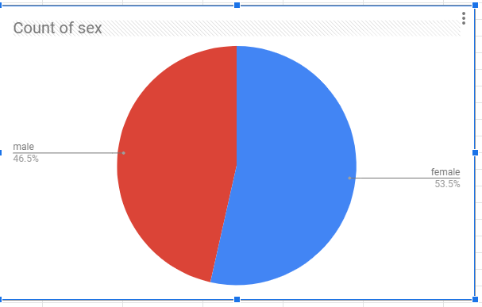
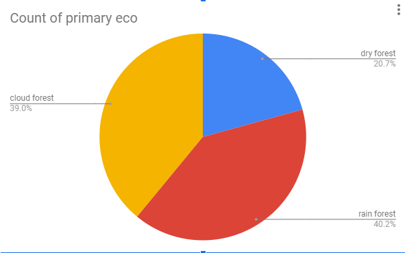
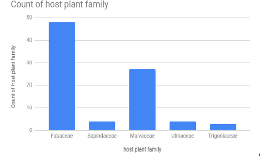
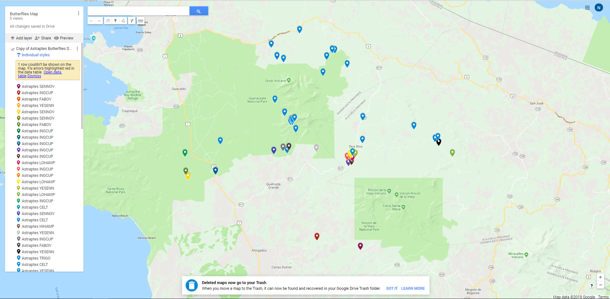

1)(Activity 2) Write a spreadsheet formula that calculates the average elevation for the data in this spreadsheet. Write your formula and the result found in your portfolio.
Formula: (=AVERAGE(K2:K88))
I got 54.63218391 for wingspan(mm)
2)(Activity 2) Are there more male or female butterflies in this data set? Include a screenshot of your chart to answer this question. What kind of data is in your chart?

There are more male in this data set.There is the percentage of the male and female butterflies.
3)(Activity 2) Which ecological environment (primary eco column) do these butterflies like to live in? There is no clear winner in this question so give the percentages in each ecological environment in a screenshot of your chart. What kind of data is in your chart?

Rain forest would be the ecological environment these butterflies like to live in.There is the percentage of cloud forest,rain forest,and dry forest for the count of primary eco.
4)(Activity 2) Come up with a 3rd question and use charting to answer it. Include the screenshot. What kind of data is in your chart?
What is the most common host plant family?

The most common host plant family is Fabaceae.There is the total amounts of different host plant fmailt.
5)(Activity 3) Include a screenshot and link of the map you created for this data.

Link